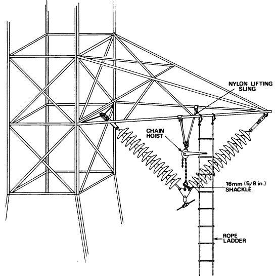
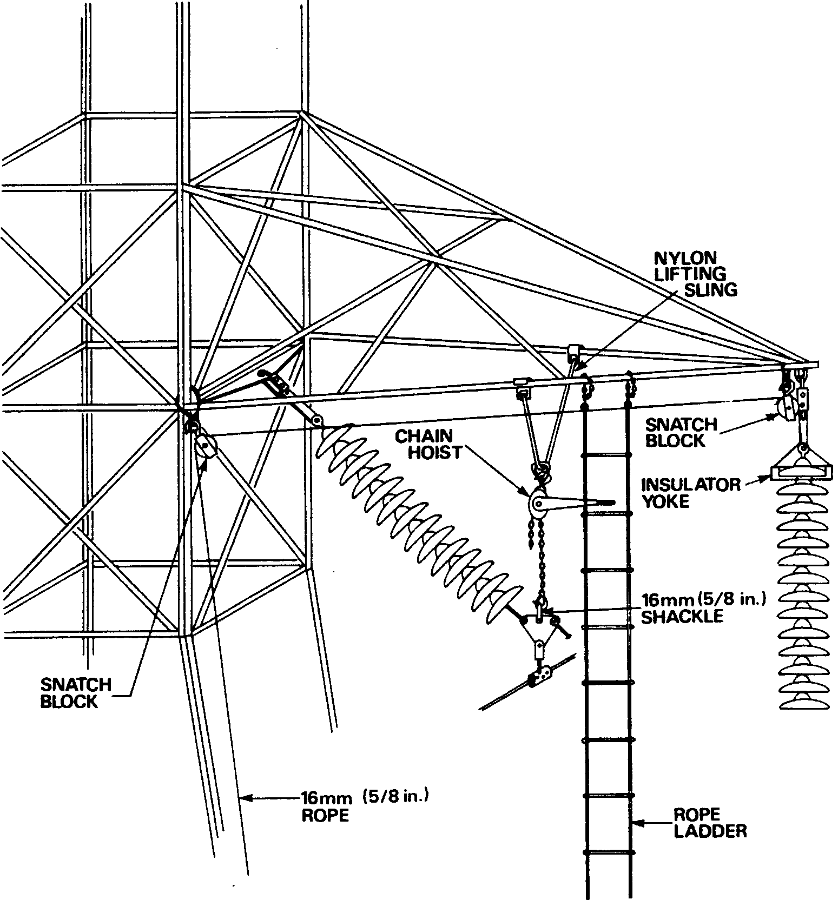
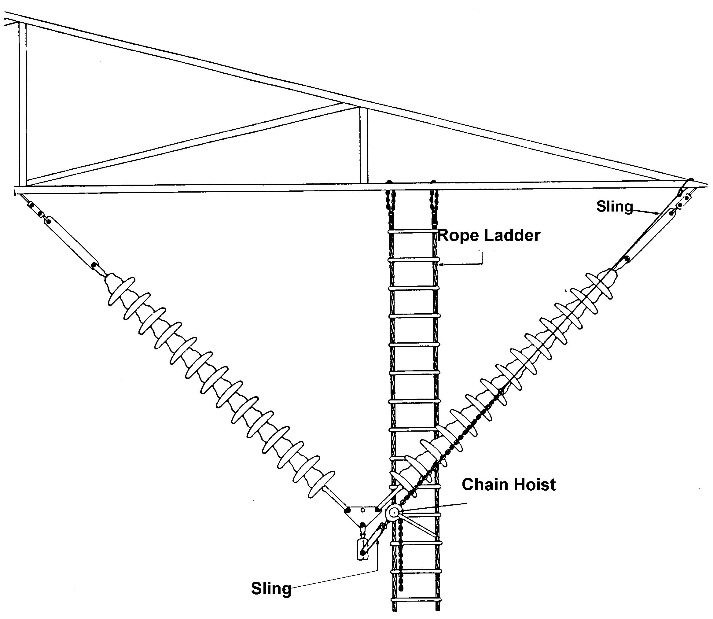

| Transmission Lines |
Technical Procedure |
Equipment:
Suspension Towers 220KV
V String
Insulators
Replacing Vertical “V” String Insulators Circuit de-Energized
|
|
| |||
|
Equipment: |
Document No.: | |||
| Issued
to: | ||||
| Status: | ||||
|
Procedure: Replacing Vertical “V” String Insulators Circuit de-Energized |
Approved Date: 7 July 2001 | |||
| Date to be Reviewed: July 2006 | ||||
Introduction
The purpose of this procedure is to provide detailed instructions on a safe method for replacing “V” string insulators on 220KV Suspension towers.
This procedure was developed by EEC engineers in head office and zones using documentation from Ontario Hydro information System and adapted to meet EEC’s needs.
Safety Precautions
A work permit must be issued.
Local earthing on both sides of the work is required.
Wear your safety helmet, safety belts.
Safety Summary
The following hazards and precautions are emphasized to highlight some of the safety considerations related to this job.
Other hazards, which are, site specific and of a general nature must be identified during the tailboard conference before the work commences.
Test the conductor for isolation and apply earths to the conductor in procedures.
Maintain clearance from any adjacent energized circuits
Calculate the conductor weight to determine the load on the rigging.
Inspect the condition of the tools and equipment before use.
Remain clear of the insulators while they are being lowered.
Wear approved fall protection.
Good verbal communication is required of all crew members
Tools and Equipment
Qty Item
1 Handline
Earths (size and number of sets required depending on the fault current available).
1 Clamp stick to install the earths
1 Chain hoist - capable of lifting the conductor weight
1 Basket - type nylon lifting sling (dwg TD33000B). See Figure 1
1 16 mm (5/8 in) shackle
3 Nylon or wire rope slings
1 Nylon sling or conductor lifting shoe
3 100 mm (4 in) snatch blocks
1 19 mm x 76 m (3/4 in x 250 ft) lifting rope
1 Rope ladder or taut - line hitch lowering equipment
1 Insulator lifting yoke
1 Capstan hoist
Material Required Replacement insulators of the proper size
Work to be Carried Out
Preliminary Work
Install the capstan hoist on the leg of the tower in a position that will allow the equipment to be raised and lowered.
Attach the handline to the tower arm or leg in a convenient location to raise the equipment.
Test the conductor for isolation and apply earths using approved earthing procedures.
Attach a rope ladder to the tower arm for access to the lower end of insulator strings.
Replacing the insulators using a basket-type sling
Install the nylon lifting sling on the two bottom arm angles of the arm directly above the conductor and then attach the chain-hoist to the lower “V” ring on the lifting sling
Install the 16 mm (5/8 in) shackle into the hole in the steel yoke supporting the conductor and insert the chain hook of the hoist into the shackle. See figure 2. TO accommodate the hoist hook a larger shackle can be attached to the first shackle if required.
Take up on the hoist to slacken the insulator strings.
Attach the handline or a short piece of rope to the bottom of the insulator string.
Hitch the rope over the conductor to allow the insulators to swing to a vertical position after the string has been disconnected.
Attach a snatch block to the arm above the insulator string using a nylon sling.
Install a snatch block on the tower shaft at the arm angle connection also using a nylon sling and then insert the lifting rope through both snatch blocks. See Figure 3.
Attach the insulator lifting yoke to the end of the rope and then install the yoke on the first or second unit from the top of the string. See Figure 3.
Take the weight of the insulator string on the rope using the capstan hoist and disconnect the insulator string from the tower arm.
Lower the insulators to the ground and replace the defective units.
The insulator string may have to be directed away from any conductor or tower arms below the work site as it is being lowered.
Check the insulator sockets and keys for proper positioning while replacing the units in the string.
Reverse the procedure to raise and reconnect the insulator string.
Disconnect and relocate the rope and snatch blocks if there are insulator units in the other string that require replacement.
Disconnect the equipment from the tower and then remove and lower the earths.
Surrender the work protection on the circuit.

Figure 1
Supporting the Conductor with a Chain Hoist
and Basket-Type Nylon Sling

Figure 2
Lowering the Insulator String to
Replace the Insulator Units
Alternative Method

Figure 3
Alternative Method of Supporting the Conductor
TL name:......................................
Circuit no.:
................................
Checked by:......................................
Signature:.................................. Date
:......................